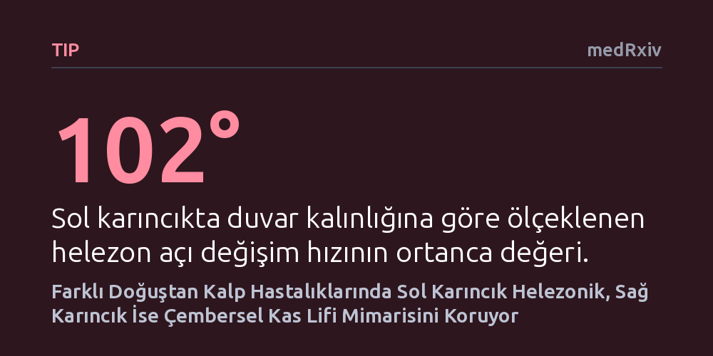

TIP · medRxiv · 2026-10-08
Araştırmacılar, farklı doğuştan kalp hastalıklarına sahip insan kalplerinde karıncık kas liflerinin yönelimini X-ışını faz-kontrast tomografisiyle inceledi. Kalbin anatomik yapısı ve kıvrılma yönü değişse bile, sol karıncığın daha helezonik, sağ karıncığın ise daha çembersel lif yapısını koruduğu belirlendi.
Bu bulgu, karmaşık kalp anomalilerinde sağ ve sol karıncığın sergilediği performans farklarının, kalbin genel biçiminden ziyade korunan özgün kas lifi mimarisinden kaynaklandığını gösteriyor.

Doğuştan kalp anomalileriyle dünyaya gelen bireylerde kalbin sağ ve sol karıncıkları uzun vadede çok farklı performanslar sergiler. Özellikle kalbin sol tarafının görevini üstlenmek zorunda kalan bir sağ karıncık, genellikle zaman içinde yorularak yetmezliğe sürüklenir. Tıp dünyası, bu iki karıncığın neden bu denli farklı dayanıma ve pompa gücüne sahip olduğunu anlamak için yıllardır çalışsa da karıncıkların derin kas mimarisine dair veriler oldukça sınırlı kalmıştı.
Kalbin kanı verimli şekilde pompalayabilmesi, kas liflerinin duvar kalınlığı boyunca nasıl bir açıyla dizildiğine doğrudan bağlıdır. Ancak embriyolojik gelişim sırasında kalbin kıvrılma yönünün tersine dönmesi ya da odacıkların yer değiştirmesi gibi ağır yapısal bozuklukların bu lif mimarisini nasıl etkilediği bilinmiyordu. Araştırmacılar, kalbin genel şekli tamamen bozulsa bile karıncıkların kendilerine özgü kas lifi dizilimini koruyup korumadığını aydınlatmayı amaçladı.
Araştırma ekibi, yapısal çeşitliliği kapsayabilmek amacıyla beş farklı gruptan insan kalp dokularını bir araya getirdi. İncelenen gruplar arasında normal kalplerin yanı sıra karıncıklar arası delik (VSD), sağ atriyal izomerizm, sol atriyal izomerizm ve karıncık ters dönmesi (ventriküler inversiyon) anomalilerine sahip kalpler yer aldı. Her gruptan üçer adet olmak üzere toplam 15 insan kalbi örneği incelendi.
Kalp duvarının mikrometre ölçeğindeki karmaşık mimarisini görebilmek için X-ışını faz-kontrast tomografisi adı verilen ileri bir görüntüleme tekniği kullanıldı. Bu yöntem sayesinde dokular kesilip parçalanmadan, her iki karıncığın serbest duvarının merkezinden yüzeye paralel sanal kesitler alındı. Dış zardan (epikardiyum) iç zara (endokardiyum) doğru her bir dilimdeki kas liflerinin helezon açıları hassas bir şekilde haritalandı.
Elde edilen görüntüler, incelenen tüm kalplerde lif açısının dış zardaki sol yönlü sarmaldan iç zardaki sağ yönlü sarmala doğru düzenli bir geçiş yaptığını gösterdi. En çarpıcı bulgu ise bu helezonik geçişin, kalbin anatomik kusurlarından veya embriyolojik kıvrılma yönünden bağımsız olarak tüm örneklerde tutarlı bir şekilde korunmasıydı.
Buna karşılık iki karıncık arasında belirgin mimari ayrışmalar saptandı. Duvar kalınlığına göre oranlanan helezon açı değişim hızı ortancası sağ karıncıkta 53 derece iken, sol karıncıkta 102 derece olarak ölçüldü. Sol karıncık kas lifleri duvar boyunca sürekli artan dik bir helezonik tırmanış gösterirken, sağ karıncık lifleri belirgin bir yatay düzlük sergileyerek daha çok çembersel bir hat izledi. Bu ölçümler, sol karıncığın helezon, sağ karıncığın ise çember yönelimli liflerle örülü olduğunu netleştirdi.
Bu sonuçlar, karıncıkların kas lifi yöneliminin organın genel biçiminden bağımsız, kalıcı ve içsel bir biyolojik plana göre şekillendiğini ortaya koyuyor. Sol karıncığın dik helezonik yapısı, yüksek basınca karşı kanı adeta bir ıslak havlu gibi burarak güçlü biçimde fırlatmasını sağlarken; sağ karıncığın çembersel lifleri daha düşük basınçlı akciğer dolaşımına uygun, körük benzeri bir çalışma düzeni sunuyor.
Elde edilen mimari harita, doğuştan kalp anomalisi olan hastalarda sağ karıncığın neden sistemik yüksek basınç altında uzun süre dayanamadığını mekanik olarak açıklıyor. Bu temel bilgi, doğuştan kalp hastalıklarının cerrahi onarım stratejilerinden laboratuvarda üretilecek biyomühendislik ürünü yapay kalp dokularının tasarımına kadar pek çok alana daha gerçekçi bir zemin kazandırabilir.